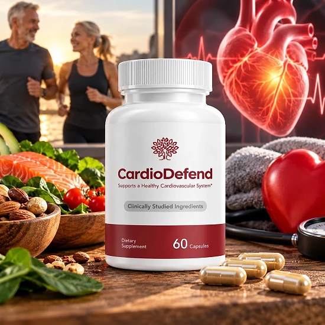
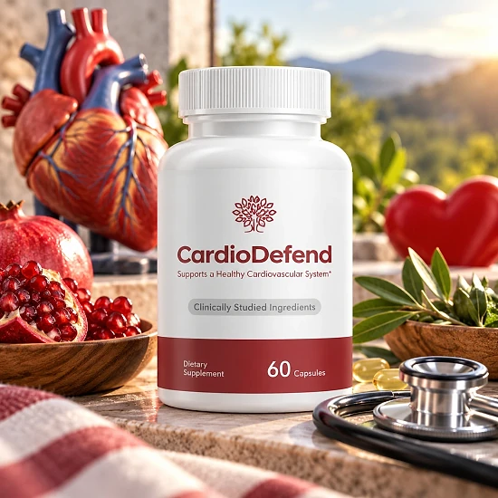
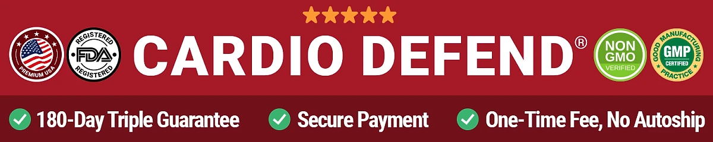

What Is CardioDefend And How Does It Work?
CardioDefend is a dietary supplement in capsule form designed to support a healthy cardiovascular system, as stated on the front of its label. It is aimed at adults who want to look after their heart and circulation with a simple daily routine, alongside a balanced lifestyle.
According to the bottle shown on the official website, each bottle contains 60 capsules, and the label describes the formula as made with clinically studied ingredients. The official order page also highlights an average customer rating of 4.8.
The official website presents CardioDefend through a video presentation that centers on what it calls exotic "sticky beans". Natto, a traditional Japanese food made from fermented soybeans, is known for its sticky texture, and the scientific references listed on the website include studies on nattokinase and natto, an enzyme and a food that have drawn research interest in cardiovascular wellness.
The same reference list also cites research on magnesium, L-arginine, and coenzyme Q10 (CoQ10), nutrients that are commonly discussed in relation to heart and circulatory health. However, the official website does not publish a Supplement Facts panel or a full ingredient list, so it is not possible to confirm which of these nutrients are in the formula or in what amounts.
The idea behind CardioDefend is to offer daily nutritional support for the cardiovascular system as part of a routine that also includes healthy eating, regular physical activity, and medical follow-up when needed. Results vary from person to person.
From a practical standpoint, CardioDefend is a capsule supplement, so there are no powders to mix or drinks to prepare, which makes it easy to fit into a daily schedule.
The official order page displays FDA-registered facility, GMP, and NSF badges. CardioDefend is not intended to diagnose, treat, cure, or prevent any disease, and it does not replace medication or care prescribed by a physician.
CardioDefend Dosage
The right way to take CardioDefend is to follow the directions printed on the bottle label. The official website does not publish the daily serving size, so the label that comes with your order is the reference for how many capsules to take and when.
According to the product images on the official website, each bottle contains 60 capsules. Because it comes in capsule form, the routine is simple: there is nothing to measure or mix, and the capsules can be taken with a glass of water as part of a daily habit.
As with most dietary supplements, consistency matters. Taking the capsules at the same time each day, for example with breakfast or dinner, makes the routine easier to remember and gives the formula a steady place in your day.
Do not exceed the amount recommended on the label. If you are pregnant, nursing, taking medication, or have a medical condition, the official website advises consulting your physician before using the product. This is especially relevant for people who take blood pressure or blood-thinning medication, since a heart-focused formula may not be suitable for everyone.
CardioDefend works best as part of a healthy lifestyle, combined with balanced nutrition, regular physical activity, good sleep, and regular check-ups with a healthcare professional. If anything about the dose is unclear, the customer support team can be reached by phone or email before you start.
CardioDefend – Refund Policy
You can order CardioDefend with confidence, knowing that every purchase is covered by a 100% money-back guarantee. According to the official refund policy, if you are dissatisfied for any reason during the first 60 days after purchase, you can call or email the support team to request a refund.
The same policy page also mentions a 180-day guarantee, so the official materials are not fully consistent about the length of the window. Before ordering, it is worth confirming the exact period with customer support and keeping that answer by email.
How the refund process works: contact support to request your refund, then send any unused bottles to CardioDefend, 19655 E 35th Dr #100, Aurora, CO 80011, USA. According to the policy, the customer pays the return shipping.
Customer Support Contact Information: support@GetCardioDefend.com or 1-888-874-4021, available from 7 AM to 9 PM, seven days a week. The official contact page says emails are answered within 24 hours or less.
Refund Processing Time: once the refund is processed, you receive a confirmation email. According to the policy, it takes 5 to 7 business days to appear on a credit card and 5 to 10 business days on a debit card, depending on your bank.
This refund policy is published on the official website, giving customers a clear way to request their money back when trying CardioDefend.
CardioDefend – Where To Buy
CardioDefend is sold through its official website, getcardiodefend.org, so if you decide to try it, it's important to be careful about where you purchase it. Orders on the official website are processed through the secure BuyGoods checkout.
Listings on marketplaces such as Amazon, eBay, or Walmart may look similar but cannot be verified as authentic, raising concerns about safety, quality, and freshness. Products purchased outside the official source may not be covered by the money-back guarantee described in the official refund policy.
For this reason, most customers recommend purchasing CardioDefend only through the official website. Buying directly from the official source ensures you receive the authentic original product, with access to the customer support team and the guarantee. The order page shows the package options and a summary before you complete the purchase.
To avoid counterfeit products, always verify that you are ordering from the official CardioDefend website before completing your purchase, and review the order summary carefully.
To ensure you’re getting the authentic product, most users choose to visit the official website.
Is CardioDefend A Scam?
Based on what the official website discloses, CardioDefend does not appear to be a scam. It is a real capsule supplement sold through an established retailer, BuyGoods, with a published refund policy, a US return address in Aurora, Colorado, a toll-free phone line, and a support email.
The official website lists scientific references on nattokinase, natto, magnesium, L-arginine, and coenzyme Q10, nutrients that are well known in the cardiovascular wellness field, and the label says the formula uses clinically studied ingredients.
There are, however, points worth keeping in mind. The official website does not publish a Supplement Facts panel, an ingredient list, or the daily dose, so buyers cannot check the formula before ordering. The refund policy mentions both a 60-day and a 180-day guarantee, the site footer refers to ClickBank even though the checkout runs on BuyGoods, and badges such as "Doctor Approved" are not backed by any named source.
The official website also does not publish customer testimonials, and the 4.8 rating shown on the order page cannot be independently verified. Results vary from person to person, and no supplement replaces medical care or prescribed treatment.
The company does offer a money-back guarantee and clear support contacts, which reduces the risk of trying the product.
If you are looking for a daily capsule to support cardiovascular wellness, CardioDefend may be worth considering — especially when purchased directly from the official website, after confirming the guarantee period and the label details with customer support, and after talking to your doctor if you take any medication.
For those who want to verify product details or check current availability, the official CardioDefend website remains the safest option.

Check Availability On Official Website
